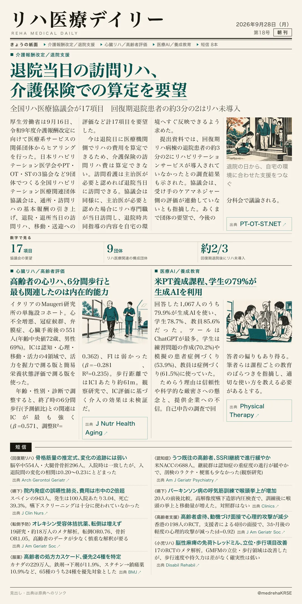
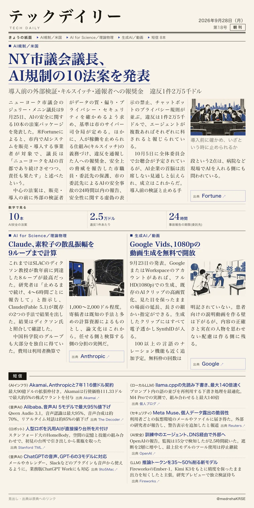

リハ医療デイリー
退院当日の訪問リハ、介護保険での算定を要望
全国リハ医療協議会が17項目 回復期退院患者の約3分の2はリハ未導入
令和9年度介護報酬改定に向けた厚労省のヒアリングで、リハ関連9団体の協議会が退院・退所当日の訪問リハなど17項目を要望した。

テックデイリー
NY市議会議長、AI規制の10法案を発表
導入前の外部検証・キルスイッチ・通報者への報奨金 違反1件2万5千ドル
ニューヨーク市議会のメニン議長が、市内でAIを販売・導入する事業者を対象とする10本の法案を発表したと米Fortuneが報じた。
